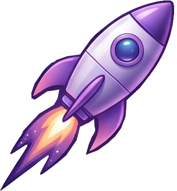

RETURN MISSION
Bab berikutnya dimulai dari bulan.Sekarang, terbang kembali ke Bumi.
Buka DLC melalui Journey Ended.
☝ Geser jari untuk terbang · Tembakan otomatis
RETURN FLIGHT PAUSED
Waktu dan roket berhenti sampai kamu siap lanjut.
Ronde yang sudah dimulai memakai 1 kesempatan.
RETURN FLIGHT COMPLETE
Hadiah Complete Registration / transaksi mengikuti verifikasi crew dan stok. Skor DLC tidak mengurangi hak hadiahmu.
RETURN FLIGHT UNAVAILABLE
Arena 3D belum berhasil dimuat.